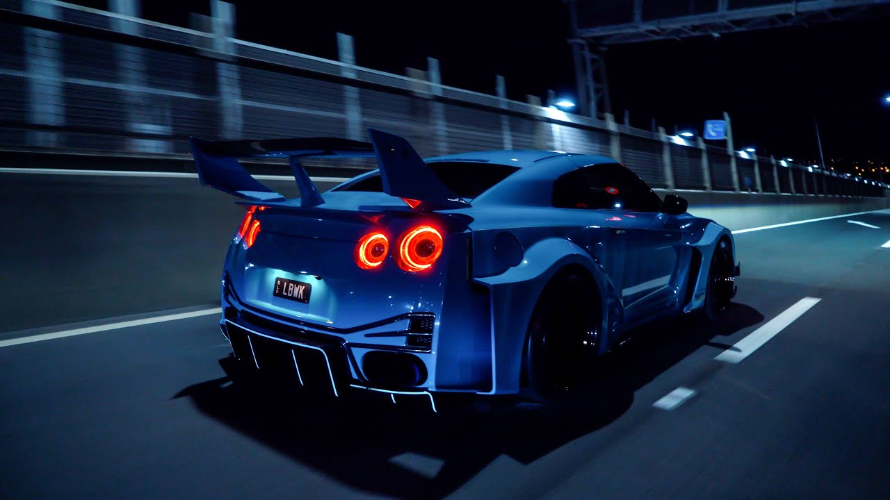
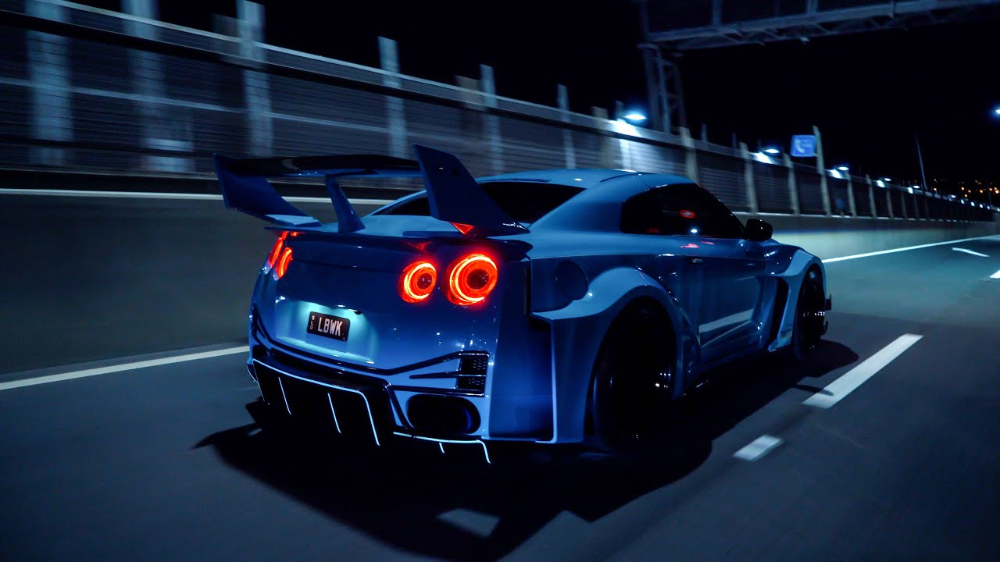

When Comfort Meets Power
News About Cars
"The Future Of Cars"

The Audi R8 Power
Audi R8: The Iconic Supercar's Final Year The Audi R8 has reached its final production year, marking the end of an era for this iconic supercar. The last R8, a V10 Performance Quattro coupe in Vegas Yellow, rolled off the production line in March 2024. With its 5.2-liter V10 engine producing 610 horsepower, the R8 has been a favorite among enthusiasts for its thrilling performance and timeless design. Despite its discontinuation, the R8's legacy will continue to live on in the hearts of its fans and on the racetracks where it has achieved significant success1.
Lamborgini Aventador SVJ!
Lamborghini Aventador SVJ: The Ultimate Track Beast The Lamborghini Aventador SVJ is a high-performance supercar that pushes the boundaries of automotive engineering. Equipped with a 6.5-liter naturally aspirated V12 engine, the SVJ delivers 770 horsepower and 566 kW of power, allowing it to accelerate from 0 to 100 km/h (0-62 mph) in just 2.8 seconds. The SVJ is renowned for its advanced aerodynamics, featuring the Aerodinamica Lamborghini Attiva (ALA) 2.0 system and aero-vectoring, which provide exceptional downforce and stability at high speeds. This technology helped the SVJ set a production car lap record at the Nürburgring. Inside, the SVJ boasts a luxurious and technologically advanced interior, with carbon fiber components, leather and Alcantara upholstery, and a state-of-the-art infotainment system. The SVJ is not just a car; it's a statement of power, precision, and performance.
Porche GT3 RS 911
The Porsche 911 GT3 RS is the epitome of track-focused engineering, designed to deliver unparalleled performance on the race circuit. Powered by a 4.0-liter flat-six engine, the GT3 RS produces 518 horsepower and 502 lb-ft of torque, allowing it to accelerate from 0 to 100 km/h (0-62 mph) in just 3.2 seconds. The GT3 RS features advanced aerodynamics, including an active rear wing and aero-vectoring, which provide exceptional downforce and stability at high speeds. This technology helped the GT3 RS set a production car lap record at the Nürburgring1. Inside, the GT3 RS offers a high-tech cockpit with carbon fiber components, leather and Alcantara upholstery, and a state-of-the-art infotainment system. The adaptive suspension system ensures a smooth and controlled ride, making it a perfect blend of comfort and performance. With its sleek design, dynamic steering, and ceramic brakes, the Porsche 911 GT3 RS is a true masterpiece of automotive engineering, designed for those who demand the ultimate driving experience.

The Nissan GTR R35
TECH THAT BREAKS THE RULES A supercar as iconic as the GT-R entails maintaining a legendary status. That means enhanced aerodynamics with new front and rear fascias for added downforce without increasing drag. Once again, the GT-R redefines the excitement of driving a supercar.
 

Ferrari
Ferrari F40: Celebrating an Iconic Supercar The Ferrari F40, unveiled in 1987 to celebrate Ferrari's 40th anniversary, remains one of the most iconic supercars of all time. Designed by Pininfarina and powered by a 2.9-liter twin-turbocharged V8 engine, the F40 produces 478 horsepower, enabling it to accelerate from 0 to 100 km/h (0-62 mph) in just 4.1 seconds and reach a top speed of 324 km/h (201 mph). The F40's lightweight construction, featuring a carbon fiber, Kevlar, and aluminum body, combined with its aggressive aerodynamics, provided exceptional performance and handling. Its distinctive design, with a large rear wing and low, wide stance, has made the F40 a timeless classic. Inside, the F40 is all about pure driving pleasure, with a stripped-down interior focused on performance. Minimalist yet functional, the cockpit features racing seats, a simple instrument cluster, and little in the way of luxury, reflecting its status as a true driver's car.